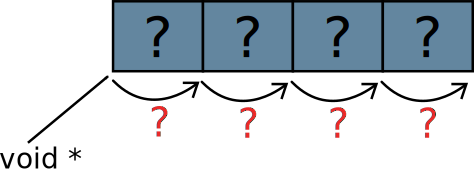

1NHF szépségverseny 2014
Nevezés: infoc@eet.bme.hu címre
kb. 640×480 PNG screenshot + néhány mondatos leírás
Generikus algoritmusok
3Menürendszer I. – a feladat
Írjunk programot, amelyben menüből választhatjuk ki a teendőt!
1. Adatbevitel
2. Módosítás
3. Keresés
4. Nyomtatás
5. Névjegy
Választás: _
1. Összeadás
2. Szorzás
3. Hatványozás
0. Kilépés
Melyik? _
printf("Menü\n\n");
printf("1. Összeadás\n"); // sorminta 1.
printf("2. Szorzás\n");
printf("3. Hatványozás\n");
printf("0. Kilépés\n");
scanf("%u", &valasztas);
if (valasztas<4) {
switch (valasztas) {
case 1: eredm = osszead(a, b); break; // sorminta 2.
case 2: eredm = szoroz(a, b); break;
case 3: eredm = hatvanyoz(a, b); break;
}
printf("E = %d\n", eredm);
}
A sormintákkal mindig az a baj, hogy nehezen módosítható, nehezen karbantartható programkódot eredményeznek.
Itt, hogy a switch(), ahol a beírt szám alapján kiválasztjuk
a teendőt, ne legyen túl áttekinthetetlen, az egyes lépéseket eleve
függvénybe tettük. Ez jó is – egészen addig, amíg nem kell módosítani
a menüt. Tegyük fel, hogy a 2-es menüponthoz szeretnénk beszúrni a
kivonást. A teendők:
- Beszúrunk egy
printf()-et az összeadás és a szorzás közé. - Ezek után a többit is átszámozzuk (szorzás, hatványozás).
- A
switch()előttiif()-nél átírjuk a számot (amely a menüpontok számával van összefüggésben) 5-re. - Beírjuk a
switch()-be az újcase 2-t. - Átszámozzuk a többi
case-t is.
Ennél biztosan kell legyen jobb megoldás is. A menüpontok nevei betehetőek tömbbe, és akkor egy ciklussal elvégezhető a kiírás és a beszámozás. Vajon a menüpontok maguk, azaz a függvények is betehetőek a tömbbe? Ha igen, meg tudjuk szüntetni a második oldali sormintát is!
4Ismétlés: a függvényhívás menete
A hívó: paraméterek a verembe, visszatérési érték a veremből.
A hívott: kezeli a lokális változóit.
#include <stdio.h>
#include <math.h>
double negyzet(double a) {
return a * a;
}
int main(void) {
double x = negyzet(5.9);
double y = sin(6.1);
printf("%g", x + y);
return 0;
}
A függvényhívás előtt a következő történik:
- A hívó
main()beteszi a verembe a paramétereket. - Helyet csinál a visszatérési értéknek is.
- Meghívja a függvényt, ami által bekerül a verembe a visszatérés címe (vagyis hogy hol kell folytatni a programot a függvényből visszatérvén).
Minden függvényhíváskor létrejön tehát egy rész a veremben, amely az adott híváshoz tartozik, és visszatéréskor megszűnik: ez a keret (stack frame).
A negyzet() függvényben a működés:
- A paramétereit a veremben találja.
- A visszatérési értéket a verembe teszi, a megfelelő memóriaterület felülírásával.
- Amikor visszatér, akkor a hívóhoz ugrik vissza, az eltárolt visszatérési cím alapján.
A függvényhívás után a hívó:
- A veremben megtalálja a visszatérési értéket. Ezt felhasználja, ha szeretné.
- Kitörli a veremből az általa betett dolgokat, hiszen azokra már nincsen szükség.
Mi lenne, ha egy másik függvényt hívnánk meg ugyanolyan kerettel?
5Függvényre mutató pointer: a háttérben…
Ha két függvénynek egyforma a fejléce, egyformán kezelik a vermet, és ezért kompatibilisek egymással.
double negyzet(double a);
double sin(double alfa);
mutató pointer.
int main(void) {
double (*fptr)(double); // ptr létrehozása
double x;
fptr = negyzet; // ptr beállítása
x = fptr(3); /* negyzet(3) */
fptr = sin;
x = fptr(5); /* sin(5) */
return 0;
}
Megfelelően felépített verem mellett cserélhetők!
Mi is történik itt? Tegyük fel, hogy van egy függvényünk, amelyik
egy darab double paramétert vár, és egy darab double
paramétert kap vissza. Ha meghívjuk ezt a függvényt, akkor a hívó felépít
hozzá egy keretet, amelyben ezeknek az értékeknek meglesz a megfelelő helye.
A hívott fogja tudni, hogy a verem tetejéhez képest hol találja a paramétereket
és hova kell tennie a visszatérési értéket. (Ennek technikai részleteiről
természetesen a fordító gondoskodik.)
Ha van egy másik függvényünk, amelynek ugyanilyen a prototípusa, akkor
a hívási keret megfelelő felépítése után meghívhatjuk azt is. Hiszen az a függvény
a veremben ugyanott fogja keresni az ugyanolyan típusú értékeket. Vagyis
ha a keretet megfelelően építjük föl, meghívható akár a negyzet(), akár
a sin() függvény. Ennek pedig semmi akadálya nincs, ha a két függvény
prototípusa megegyezik.
Így bevezethetjük a függvényre mutató pointer típust. Ez azt a memóriacímet tárolhatja, ahol a függvény található a memóriában. A függvény hívása pedig az alábbi módon történhet:
- Felépítjük a hívási keretet a megfelelő módon.
- Arra a memóriacímre ugrunk a végrehajtással, amire a pointer hivatkozik.
- Miután visszatért, a veremből kivesszük a visszatérési értékét, és töröljük a keretet.
Mivel azt tudni kell, hogy mi legyen a hívási keret felépítése, ezért a
függvénypointer típusában benne kell legyen az általa hivatkozott függvény prototípusa.
Ezért néz így ki fent az fptr változó definíciója:
double (*fptr)(double);
A jobb oldali zárójel és a benne lévő double mutatja, hogy egy függvényről
van szó, amelynek egy double paramétere van. A * jelzi, hogy az
fptr változó egy ilyen függvényre mutat. A bal oldali double pedig
azt, hogy ha meghívjuk a függvényt, egy double-t kapunk vissza.
Egy értékre mutató pointernél is a pointer típusából tudja a fordító, hogy
a dereferálása esetén milyen típusú értéket vehetünk ki a memóriából (pl. int*
egy egész számra mutat). A függvényre mutató pointereknél ugyanez a helyzet: a pointer típusából
tudja a fordító, hogy mik a hívott függvény paraméterei és mi a visszatérési értéke. Vagyis hogy
hogyan kell számára a hívási keretet felépíteni.
6A függvénymutató típus szintaktikája
Minden függvénynek van egy címe. Ez a cím képezhető, elmenthető egy függvénymutató típusú változóba, és egy függvénymutató segítségével meghívható a függvény.
Definiálhatunk változót és típust is:
körbevevő zárójel!
/* függvénymutató típusú változó */ VisszaTíp (*változónév)(ParamTíp, ParamTíp…); // változó /* függvénymutató típus */ typedef VisszaTíp (*TípNév)(ParamTíp, ParamTíp…); // típus
Ha a függvénymutató változóban a név elé nem tennénk *-ot, akkor
az nem mutató lenne. Ha pedig nem tennénk az így becsillagozott kifejezést
zárójelbe, akkor a double *fptr(int) azt jelentené,
hogy egy fptr nevű függvényt deklarálunk, amely double*-gal tér vissza.
Amit tehát fontos megjegyezni:
- zárójel veszi körül a változó nevét a csillaggal,
- az argumentumoknál csak a típusokat soroljuk fel, vesszővel elválasztva.
A typedef-et gyakran itt is két sorban írjuk le.
Először definiáljuk azt a típust, amely egy adott függvényt jelent,
utána pedig azt a típust, amely egy ilyen függvényre mutat:
typedef int KaraktertEvoFuggveny(char); typedef KaraktertEvoFuggveny *FvPtr;
Ilyenkor nincsen szükség zárójelezésre sem, mivel a sorok egymás utánisága
miatt már egyértelmű a fordító számára, hogy a *
operátor az FvPtr-re értendő, tehát egy olyan típusú pointer
a definiált típus.
Példa:
void kiir(char *str) { printf("%s", str); }
typedef void (*fptipus)(char *);
fptipus fptr = kiir;
fptr("hello világ"); // fv. hívás operátora: kerek zárójel ( )
A függvényekre mutató pointerek és a tömbök között szintaktikailag igen nagy a hasonlóság.
Egy tömb és egy függvény neve önmagában a címét képzi.
Az érték eléréséhez
a tömböknél az indexelő operátorra [], van szükség,
a függvényeknél pedig a függvényhívó operátorra ().
| Kezdőcíme | Értéke (eleme / hívása) | |
|---|---|---|
| Tömb | tomb
| tomb[2]
|
| Függvény | fv
| fv(3)
|
7Menürendszer II. – a mutató típus
A menüpontok függvényei:
int osszead(int a, int b) {
return a + b;
}
int szoroz(int a, int b) {
return a * b;
}
int hatvanyoz(int a, int b) {
int i, eredmeny = 1;
for (i = 0; i < kitevo; ++i)
eredmeny *= a;
return eredmeny;
}
Vagyis minden függvény megkap két számot és elvégez rajtuk egy műveletet, aminek az eredményét a visszatérési értékben közli.
Ezekre a függvényekre egy ilyen pointer tud mutatni:
typedef int (*MenuFv)(int, int);
8Menürendszer III. – a tömb és használata
typedef int (*MenuFv)(int, int);
typedef struct {
char const *nev;
MenuFv pfv;
} MenuPont;
MenuPont menupontok[] = {
{ "Összeadás", osszead },
{ "Szorzás", szoroz },
{ "Hatványozás", hatvanyoz },
{ NULL, NULL } /* végjel */
};
Mivel mutatókat tárolnak, ezért utolsó elemnek betehető egy NULL érték, ami jelzi a végét – így biztonságosan kezelhető. Ez egy végjel: amikor egy ciklus fut a tömbön, a tömb tartalma alapján tudni fogja, hol van a vége. Nem kell majd külön szerepelnie a programban a tömbméret megadásának sem. Ezt a trükköt már rengetegszer használtuk.
A menüpontok kiírása:
és a hívás
for (i = 1; menupontok[i-1].nev != NULL; ++i)
printf("%d. %s\n", i, menupontok[i-1].nev);
meret = i; /* a for() végén i = tömb mérete */
A for ciklus indexváltozójának utolsó értéke a NULL elem indexe, vagyis a tömbben lévő értékes elemek száma. Ezzel az értékkel tudjuk ellenőrizni, hogy a felhasználó által bevitt menüpont értéke érvényes-e.
A kiválasztott menüpont végrehajtása:
if (0 < valasztas && valasztas < meret) {
eredmeny = menupontok[valasztas-1].pfv(a, b); // függvénypointer
printf("Eredmény: %d\n", eredmeny);
}
else
printf("Nincs ilyen menüpont\n"); // ha rossz az index
A fenti kifejezés működése részletesen:
| Kifejezés | típus |
|---|---|
menupontok | struktúrák tömbje, a menüpontok leírása |
menupontok[index] | egy struktúra, menüpont leírása |
menupontok[index].fv | egy függvényre mutató pointer |
menupontok[index].fv(2.6, 3) | 2.6, 3 paraméterekkel meghívva az egyik függvény |
Amit csináltunk:
- a függvénymutatókat tároljuk egy tömbben,
- a menüpontok leírását is tároltuk a tömbben,
- mivel ezek összetartoztak, páronként egy struktúrába kerültek.
Ennek a megoldásnak az előnye az, hogy
- egy új menüpont hozzáadása nagyon egyszerű, csak a tömböt kell módosítani
- a működés automatizált,
- könnyű hibatűrő programkódot készíteni.
9Generikus (általános) algoritmusok
Mivel a függvények értékként kezelhetőek, és paraméterként adhatóak át, egyes algoritmusok működése megfogalmazható általánosságban is.
Mennyi a valószínűsége annak, hogy…
- hogy kockával 6-ost dobunk? (1/6)
- hogy fejet vagy írást dobunk? (1/2)
- hogy egy (-1…1; -1…1) véletlenszerűen választott pont az egységkörbe esik? (π/4)
- … mennyi a π értéke?!
Monte-Carlo-módszer: végezzük el a „kísérletet” 1000-szer, és számoljuk meg, hányszor sikerült!
Fej vagy írás, melyiknek hány százalék a valószínűsége? Írjunk egy függvényt, amely generál ezer darab 0 (fej) vagy 1 (írás) értékű véletlenszámot, és megnézi, hogy mekkora arányban lettek nullák:
double fejvagyiras(void) {
int i, h;
h = 0;
for (i = 0; i < 1000; ++i)
if (rand()%2 == 0)
h += 1;
return h / 1000.0; /* egész osztást elkerülni! */
}
Ennek a visszatérési értéke 0,5 körül lesz.
Ha a kockával hatosokra vagyunk kíváncsiak,
ugyanerre a függvényre van szükség, csak a feltétel más. Ha az
egységkörbe eső pontokra, akkor is. Általánosítsuk ezért! Az
elvégzendő „kísérletet” vegyük át paraméterként! A kísérletnek,
mint függvénynek bemenő adata nincsen (void paraméterű),
a visszatérési értéke egy logikai igaz/hamis érték (int
típus).
A kísérlet függvényre mutató pointer típusa:
int (*kiserlet)(void);
A montecarlo() függvény:
double montecarlo(int (*kiserlet)(void)) {
int i, h;
h = 0;
for (i = 0; i < 1000; ++i)
if (kiserlet())
h += 1;
return h / 1000.0; /* egész osztást elkerülni! */
}
Ez meghívja ezerszer a paraméterként kapott függvényt, és megszámolja, hányszor adott vissza igazat.
Példa kísérlet függvény: mekkora a valószínűsége annak, hogy a (0…1; 0…1) véletlenszerűen választott pont az egységkörbe esik?
int egysegkorbe(void) {
double x = rand()/(double) RAND_MAX;
double y = rand()/(double) RAND_MAX;
return x*x + y*y < 1;
}
A montecarlo() hívásai a fenti feladatok megoldására:
printf("fej: %g%%\n", 100.0 * montecarlo(fejvagyiras));
printf("hatos: %g%%\n", 100.0 * montecarlo(hatostdobunk));
printf("korbe: %g%%\n", 100.0 * montecarlo(egysegkorbe));
printf("pi: %g\n", 4 * montecarlo(egysegkorbe));
Az utolsó sor a π becslését adja a Monte-Carlo-módszerrel. A
montecarlo(egysegkorbe) hívás megmondja, hogy a (0…1; 0…1)
tartományban generált véletlen számpárok hány százaléka esik a körbe. A negyedkör
területe r2π/4=π/4, szemben a
vizsgált négyzet területével, ami kereken 1, tehát a valószínűség π/4, vagyis
a négyszerese π-t kell adja.
10Az év eleji tételek generikus változata
Tételek a félév eleji anyagból – ezek mind generikus algoritmusok:
- Számlálás tétele: adott tulajdonságú elemek darabszáma
- Maximumkeresés tétele: legvalamilyenebb elem megkeresése
- …
számlálás
int szamlal(long *tomb, int meret, int (*tul)(long)) {
int i, db;
db = 0;
for (i = 0; i < meret; ++i)
if (tul(tomb[i])) // adott tulajdonságú?
++db;
return db;
}
A program forráskódja is így nagyon szemléletes. Akárhány függvényt írhatunk, amelyek tulajdonságokat vizsgálnak. Ezek a predikátumok:
int negativ(long x) {
return x < 0;
}
int paros(long x) {
return x%2 == 0;
}
A függvényeket pedig egyszerűen paraméterként átadjuk:
long tomb[10] = {………};
printf("%d negativ van.\n", szamlal(tomb, 10, negativ));
printf("%d paros van.\n", szamlal(tomb, 10, paros));
11Állapotgépek függvényre mutató pointerrel
A „C milliomos” játék állapotgráfja:
Ez vezérli a játékot. (Az összes nem specifikált átmenet hibásnak számít: pl. a kérdésfeltevés állapotban nem érkezhet „vissza” típusú esemény.) A tevékenységeket függvényekbe téve az állapotgépet lekódolhatjuk úgy is, hogy a tevékenységtábla függvényre mutató pointereket tartalmaz!
typedef struct AllapotPont {
void (*tevekenyseg)(void);
Allapot kovetkezo;
} AllapotPont;
Események: új játék, válasz, segítség, következő, helyezések, vissza.
/* tabla[állapot][eseménytípus] */
AllapotPont tabla[4][6] = {
/* jatekszabaly */
{ { uj_jatek_fv, kerdes }, { NULL, 0 }, { NULL, 0, },
{ NULL, 0, }, { dicsoseg_fv, dicsoseg }, { NULL, 0 } },
{ }, /* dicsoseg */
{ }, /* kerdes */
{ }, /* valasz */
};
Az állapotgépet kezelő program:
Esemeny esemeny;
Allapot allapot;
while ((esemeny = uj_esemenyre_var()) != -1) {
/* hibás (érvénytelen) esemény? */
if (tabla[allapot][esemeny].tevekenyseg == NULL)
break;
/* meghívjuk az adott tevékenység függvényét */
tabla[allapot][esemeny].tevekenyseg();
/* lépünk a következő állapotba */
allapot = tabla[allapot][esemeny].kovetkezo;
}
Hogy ne legyen túl sok állapotunk, a tevékenységeket érdemes paraméterezni. Például a kérdést mutató tevékenységnek paramétere lehet az, hogy kért-e a játékos segítséget, vagy nem – így nem kell mindenféle segítséghez külön állapotot létrehozni.
Generikus tárolók
13Generikus lista – miért?
Akármit teszünk a listába, a módszer ugyanaz:
- Struktúra, benne
ListaElem*pointer - Ugyanúgy működik a bejárás, beszúrás, törlés, …
Tegyük fel, hogy írunk egy programot, amelyben szükség van könyvek listájára, szerzők listájára és egész számok listájára. Emiatt három listát kellene implementálni? Hiszen nem különböznek a listák semmiben, csak a tárolt adatban!
typedef struct ListaElem {
…
… // kedvenc adataink
…
struct ListaElem *kov;
} ListaElem;
ListaElem *iter = eleje;
while (iter != NULL) {
…
… // kedvenc műveletünk
…
iter = iter->kov;
}
Gond: egy típusos nyelvben hogyan kezelhetünk adatokat,
amelyeknek nem ismerjük a típusát?! A fordítónak mindenképp meg kellene mondanunk, hogy mit
teszünk a struktúrába. Különben hogy hivatkozunk rá, honnan tudja, hogy mennyi memóriát kell
foglalni, honnan tudja, hogy mennyi sizeof(ListaElem)? Az egyes feldolgozott
listaelemeken végzett műveletet talán valahogy megoldhatnánk egy paraméterként átvett
függvénnyel, de ha azt se tudjuk, hogy milyen adat van a listaelemben, akkor mi lesz az átvett
függvény paramétere? Egész szám, könyv, szerző neve?
El kellene választani a lista algoritmusait a saját adatokhoz tartozó feladatainktól, és az adatszerkezetet a tárolt adatoktól. De hogyan?
14Generikus lista – az ötlet: void*
A C-ben nincs olyan típus, ami bármilyen adatot tartalmazhat. Viszont van
olyan mutató, ami tetszőleges adatra mutathat: a void*!
void *malloc(size_t meret); free(void *ptr);
Ötlet: ne tegyük az adatot a struktúrába, ott csak egy pointer legyen rá!
/* generikus listaelem */
typedef struct GenerikusLE {
void *adat; // !
struct GenerikusLE *kov;
} GenerikusLE;
Meglátjuk: ez megoldja az algoritmusok és az adatok szétválasztását is.
15Generikus lista – a void* használata
Tegyük fel, hogy a void* mutatók könyvekre mutatnak.
typedef struct GenerikusLE {
void *adat;
struct GenerikusLE *kov;
} GenerikusLE;
Az adatok kiírása:
cast kell!
De miért?
GenerikusLE *iter;
for (iter = eleje; iter != NULL; iter = iter->kov) {
Konyv *ez = (Konyv *) iter->adat; // !
printf("Szerző: %s\nCím: %s\nKiadás éve: %d\n\n",
ez->szerzo, ez->cim, ez->kiadas);
}
Mivel mi tudjuk, hogy úgy építettük fel
a listát, a benne lévő adat pointerek Konyv
struktúrákra mutatnak, megengedhetjük magunknak, hogy Konyv*
mutatókká alakítjuk (cast-oljuk) őket bejáráskor. Ezt meg is kell tennünk,
mert a void* mutatóval az adatot nem tudjuk elérni.
A könyvre mutató pointert dereferálva viszont már elérjük a könyv adatait.
Miért nem tudja ezt a fordító megtenni? Mert amikor az eredeti Konyv*
pointert betettük a listába, void*-gá konvertáltuk a típusát.
Vagyis ott eldobtuk az információt, hogy az a pointer egy könyvre mutat!
… és ha nem kiírni akarunk, hanem valami mást?
16Generikus lista – a bejárás általánosítása
Végezzünk el valamilyen műveletet minden listaelemen:
void for_each(GenerikusLE *eleje, void (*fv)(void *)) { // !
GenerikusLE *iter;
for (iter = eleje; iter != NULL; iter = iter->kov)
fv(iter->adat); // !
}
Ezt a műveletet sok programozási nyelvben és a szakirodalomban is for each-nek nevezik.
void (*fv)(void *): a mutatott fv() függvény valamit csinál
majd a valamilyen adaton, amire a void* pointer mutat.
A függvény használata:
void konyv_kiir(void *v) { // !
Konyv *ez = (Konyv *) v;
printf("Szerző: %s\nCím: %s\nKiadás éve: %d\n\n",
ez->szerzo, ez->cim, ez->kiadas);
}
GenerikusLE *konyveim = …………; for_each(konyveim, konyv_kiir); // !
A listát bejáró függvény egy olyan feldolgozó függvényt vár, amelynek
át tudja adni a számára ismeretlen típusra mutató pointert, az iter->adat-ot,
ami void* típusú. Ezért az általa átvett függvény paramétere is
void*.
A könyv adatait kiíró függvényt ezért ennek az elvárásnak megfelelve
kell megírni: a függvény nem vehet át Konyv*-ot, hanem csak void*-ot.
Mivel ez a függvény viszont ismeri a típust, tudja, hogy ott egy könyv struktúra van,
a mutató típusát átalakíthatja Konyv*-gá, ahogyan az előző dián is szerepelt.
17A bejárás még erősebb általánosítása
Mi a helyzet, ha adatot is kell átadni?
Tegyük fel, hogy a bejárásban egyéb paraméterre van
szükségünk. Például arra, hogy melyik fájlba kell írni az adatokat. Vagy egy
másik listára, ahova át kell másolni a könyvek adatait. Vagy egy számlálóra, mert
meg szeretnénk számolni, hány 2012-ben kiadott könyv van a listában. A sokféle
típusú „egyéb paraméter” problémáját megoldhatjuk ugyanazzal a trükkel, mint
eddig: a listát bejáró függvény átvesz egy void* mutatót a
bejáráshoz tartozó adatra (legyen az bármi, nem foglalkozik vele!), és ezt a
paramétert a könyv mellett átadja a bejáráskor meghívott függvénynek.
void for_each_param(GenerikusLE *eleje,
void (*fv)(void *, void *), void *param) {
GenerikusLE *iter;
for (iter = eleje; iter != NULL; iter = iter->kov)
fv(iter->adat, param);
}
Tehát úgy módosítjuk a bejáró függvényt, hogy
az általa átvett feldolgozó függvénynek nem egy, hanem két paramétere
kell legyen. Az első paraméterben meg fogja adni a feldolgozandó
elemet, a második paraméterként pedig azt a param
adatot, amelyet a függvény mellé kapott. Erről a param
adatról ugyanúgy nem tud semmit, mint a feldolgozott listaelemekről.
Az az fv() függvény dolga, hogy mit kell csinálni
a listaelemmel (iter->adat) és ezzel (param).
A hívó tetszőlegesen, a saját céljaira használhatja.
A függvény használata:
void konyv_kiir_fajlba(void *konyvv, void *fajlv) {
Konyv *konyv = (Konyv *) konyvv;
FILE *fajl = (FILE *) fajlv;
fprintf(fajl, "Szerző: %s\nCím: %s\nKiadás éve: %d\n\n",
konyv->szerzo, konyv->cim, konyv->kiadas);
}
FILE *fp = fopen("konyvek.txt", "wt");
for_each_param(konyveim, konyv_kiir_fajlba, (void *) fp); // !
fclose(fp);
A használathoz megnyitunk egy fájlt, és meghívjuk az új for_each_param()
függvényt. Az a függvény be fogja járni a listát, és az összes eltárolt könyvre
meg fogja hívni a konyv_kiir_fajlba() függvényt, mégpedig úgy,
hogy első paramétereként átadja neki a könyvet, második paramétereként pedig
a fájlt.
Ha meg szeretnénk számolni a 2000 és 2010 között kiadott könyveket, akkor a meghívott függvény segédadata egy egész számra mutató pointer lesz:
void konyv_szamlal_2000_2010(void *konyvv, void *szamlalov) {
Konyv *konyv = (Konyv *) konyvv;
int *szamlalo = (int *) szamlalov;
if (konyv->kiadas>=2000 && konyv->kiadas<=2010)
*szamlalo += 1;
}
A függvény hívása pedig:
int sz = 0; for_each_param(konyveim, konyv_szamlal_2000_2010, (void *) &sz);
A void * mutatót bármire használhatjuk. Ha nem csak egy,
hanem több adatot is át kell adni paraméterként, semmi gond: betesszük
azokat egy struktúrába, és arra adjuk a mutatót!
18Generikus lista – rendezés
void lista_rendez(GenerikusLE *eleje,
int (*kisebb)(void const *, void const *)) {
GenerikusLE *i, *j, *min;
if (eleje == NULL || eleje->kov == NULL) /* rövid? */
return;
for (i = eleje; i->kov != NULL; i = i->kov) {
min = i;
for (j = i->kov; j != NULL; j = j->kov)
if (kisebb(j->adat, min->adat)) // kisebb? a fv megmondja!
min = j;
if (i != min) {
void *temp = min->adat;
min->adat = i->adat;
i->adat = temp;
}
}
}
A generikus rendező függvény rendezi a generikus listát. Az érdekessége, hogy
semmit nem tud az adatokról, sem arról, hogy hogyan kell összehasonlítani azokat.
Csak lát két pointert, amelyre meghívja a paraméterként kapott hasonlító függvényt;
utána pedig a hasonlító függvény visszatérési értéke alapján eldönti, hogy meg
kell-e cserélni a két elemet, vagy nem. Így tetszőleges típusú adatokra, és
tetszőleges rendezési szempontokra is használható! Hiszen ha olyan összehasonlító
függvényt adunk neki, amely nem egyik<masik esetén, hanem egyik>masik
esetén ad igaz értéket, éppen ellenkező sorrendbe fog rendezni.
A rendezés pedig nagyon gyors, mert a függvénynek nem az adatokat kell cserélgetnie a memóriában (nem a könyv struktúrák fognak elmozdulni a helyükről), hanem csak a pointereket. Éppen ezért nem változik a lista eleje mutató sem: csak a lista adattagjai változnak, de azok is most csak a pointerek.
A rendezés csak a pointereket cseréli:
Ábécébe rendezés, szerző, azon belül cím szerint:
int abecerend_kisebb(void const *v1, void const *v2) {
Konyv const *k1 = (Konyv const *) v1;
Konyv const *k2 = (Konyv const *) v2;
int er;
er = strcmp(k1->szerzo, k2->szerzo);
if (er < 0) return 1;
if (er > 0) return 0;
er = strcmp(k1->cim, k2->cim);
return er < 0;
}
A fenti függvény két könyvet hasonlít össze ábécébe rendezéshez. Igazzal tér
vissza, ha a v1 pointer által mutatott könyv „kisebb”, mint a
v2 könyv, azaz előrébb kell legyen az ábécé rendben.
Az összehasonlításhoz előbb megnézi a szerzőt. Ha k1 szerzője
előrébb van, mint k2, akkor egyértelmű, hogy k1, k2
kell legyen a sorrend. Ha hátrébb, akkor pedig egyértelmű a k2, k1
sorrend, ezért hamissal tér vissza (jelezve, hogy nem előrébb van, hanem hátrébb).
Ha a két szerző egyforma, akkor ugyanígy vizsgálja a címeket.
Ezt a
függvényt is arra szánjuk, hogy a generikus lista algoritmusainak adhassuk, ezért
a paraméterek void*-ok. A változtatás az előzőekhez képest annyi,
hogy itt a függvény void const *-okat vett át, jelezve, hogy nem
fogja az adatokat változtatni, csak vizsgálni; továbbá van visszatérési értéke
is, egy logikai érték.
Így kell használni:
lista_rendez(konyveim, abecerend_kisebb);
19Most akkor hol is vannak a könyvek?
A void* csak pointer, az nem tárol könyvet. A könyvek
adatai máshol kell legyenek, nem férnek a struktúrába!
Ha a void* csak pointer (márpedig az :D),
az azt jelenti, hogy a könyvek adata nem tárolódhat a listaelemeken belül.
Vagyis valahol lennie kell egy másik memóriaterületnek (vagy memóriaterületeknek),
ahol a tényleges adatok tárolódnak.
GenerikusLE *konyveim = NULL; Konyv kt[10]; konyveim = beszur(konyveim, (void*)(kt+0)); konyveim = beszur(konyveim, (void*)(kt+1)); konyveim = beszur(konyveim, (void*)(kt+2)); ..... konyveim = beszur(konyveim, (void*)(kt+9)); /* a könyvek nem a listában vannak! */ felszabadit(konyveim);
GenerikusLE *konyveim = NULL; Konyv *k; k = (Konyv *) malloc(sizeof(Konyv)); konyveim = beszur(konyveim, (void*) k); k = (Konyv *) malloc(sizeof(Konyv)); konyveim = beszur(konyveim, (void*) k); /* a könyvek a listá"ban" vannak! */ for_each(konyveim, free); felszabadit(konyveim);
Fontos: kié a tárolás felelőssége?
Elképzelhető például az, hogy van valahol egy könyvek tömbje, és annak elemeire mutat a generikus lista. Így listaként tudjuk kezelni azokat, ami jól jön pl. az előbb bemutatott rendezésnél. Viszont nem tudjuk kihasználni a listák igazi előnyét, nevezetesen azt, hogy dinamikusan foglalhatóak az elemeik.
A másik megoldás az lehet, ha a dinamikusan foglalt listaelemek
mellé még külön dinamikusan foglaljuk a könyv struktúrákat. Ilyenkor a listában
tárolt könyv hivatkozások egyben a dinamikusan foglalt memóriaterületek hivatkozásai
is! Vagyis ha a listát felszabadítjuk, akkor fel kell szabadítani a könyveket,
míg a tömbös példa esetén nem volt malloc(), ezért nem kell free()
sem. Ilyenkor a lista felelőssége a könyvek tárolása, az előbbi esetben pedig nem!
A könyvek felszabadítása egyébként könnyedén megoldható a for_each()
függvénnyel, hiszen éppen olyan a fejléce, mint ami nekünk kell: void(*)(void*).
Generikus algoritmusok tömbökön
21Generikus tömb?
Vajon lehet olyan függvényt írni, ami bármilyen tömbön működik?
A pointer aritmetikához ismerni kell a típust:
int tomb[] = {9, 3, 5, 76, 1, 45, 87}, *pi;
tomb[3] = 7;
*(tomb+3) = 7; // ugyanaz
pi = &tomb[3];
pi = tomb+3; // ugyanaz

A fordító figyelembe veszi a cím számításánál!
Azonban ez void * esetén nem működhet.
Amikor az adatok tömbben vannak, a pointer típusának nem csak egy,
hanem két szerepe is van. Azon felül, hogy ez ad információt arról,
hogy az adott típust hogyan kell kezelni (nyilván más egy int
és egy struct Konyv), a típus ismerete a tömbelemek
címének kiszámításakor is fontos. Innen tudja a fordító azt, hogy mekkora
egy tömbelem, vagyis a következő elemre lépéshez hány bájtot kell
ugrani a memóriában. Ezt az információt mindig figyelembe veszi, amikor
egy tömbelemet indexelünk, vagy a címét számítjuk.
Ha a tömb elejére mutató pointert void*-gá konvertáljuk,
akkor nem csak a tömb tartalma válik ismeretlenné, hanem az is, hogy
az egyes tömbelemek hol helyezkednek el. Míg a generikus lista függvényei
számára ismert volt, hogyan érje el az egyes adatok pointereit (mert
az adatszerkezetet adó struct GenerikusLE mindig ugyanaz),
tömbnél ez nem működhet. A tömb elejére mutató void*
pointer nem ad semmilyen információt a tömbelemekről.
22Tömbök generikusan – a pointerek kezelése
Egy char* típusú mutatót használva bájtonként lépkedhetünk.
A sizeof pedig megmondja egy típusról, hány bájtos. char=bájt!
#include <stdio.h>
int main(void) {
int tomb[5] = { 11, 22, 33, 44, 55 }, i;
void *tombvoidp = (void *) tomb;
for (i = 0; i<5; ++i) {
char *tombeleje = (char *) tombvoidp; // char=bájt!
char *elemcime = tombeleje + i*sizeof(int);
int *elem = (int *) elemcime; // újra int
printf("%d ", *elem);
}
return 0;
}
Ahhoz, hogy a mutató aritmetika működjön, a mutatót típussal kell
ellátni, hiszen ilyenkor az adott típus méretével tolja el a címet. Ha char*
típusúvá alakítjuk a pointert, akkor bájtonként tudunk lépni, mivel sizeof(char)=1,
definíció szerint. Ez nem azt jelenti, hogy ott karakterek vannak! Csak másképp nem tudjuk
megfogalmazni, amit szeretnénk. (Egyes fordítók megengedik azt, hogy void*
mutatókon használjunk pointer aritmetikát, de ez nem szabványos, úgyhogy inkább
kerüljük az ilyesmit!)
23Tömbök generikusan – a méret átadása
A probléma megoldható, mégpedig úgy, ha egy generikus tömböt feldolgozó
algoritmusnak nem csak a tömb kezdőcímét (most void* formában!) és a tömb méretét
adjuk át, hanem megmondjuk neki az egyes tömbelemek méretét is! Erre nincsen trükkös megoldás,
egyszerűen közölni kell ezt a számot is az algoritmussal.
Nem véletlen, hogy a malloc() függvénynek
paraméterként kellett adni a méretet. Ugyanígy, az fread() és
fwrite() függvények is meg kell kapják fájlba írt / fájlból olvasott
tömb elemszámát és az elemek méretét.
Az algoritmussal közölni kell:
- a tömb kezdőcímét:
void*, a tömb elemeinek a számát:db, - és egy elem méretét:
meret. !
fwrite(void *ptr, size_t meret, size_t db, FILE *fp);
24Tömbök generikusan – az elemek kezelése
Egy függvény így lépdelhet végig egy void* tömbön:
void for_each_tomb(void *t, int db, int elemmeret,
void (*muvelet)(void *)) {
int i;
char *bajtptr = (char *) t; // csak sizeof(char) miatt!
for (i = 0; i < db; ++i) {
muvelet((void *) bajtptr);
bajtptr += elemmeret; // léptetés
}
}
A for_each_tomb() használata egy tömb minden elemének a kiírására.
void int_kiir(void *vp) { printf("%d ", *(int *)vp); }
int tomb[] = { 68, 12, 125, 97, 56 };
for_each_tomb(tomb, 5, sizeof(int), int_kiir);
Komplexebb példa: egy adott feltételt leginkább kielégítő elem keresése. (Legkisebb, legnagyobb, legzöldebb, …)
void *leg_keres(void *tomb, int db, int meret,
int (*kisebb)(void const *, void const *)) {
int i;
char *ptr, *eredmeny; // csak sizeof=1 miatt char!
eredmeny = (char *)tomb; // első
ptr = (char *)tomb + meret;
for (i = 1; i < db; ++i) {
if (kisebb((void *) ptr, (void *) eredmeny))
eredmeny = ptr; // többi
ptr += meret;
}
return eredmeny;
}
A legkisebb elem megkeresése egy tömbben:
int kisebb_e(void const *vp1, void const *vp2) {
int const *psz1 = (int const *)vp1,
*psz2 = (int const *)vp2;
return *psz1 < *psz2;
}
int main(void) {
int tomb[5] = {68, 12, 125, 97, 56};
lk = *((int*)leg_keres(tomb, 5, sizeof(int), kisebb_e));
printf("Legkisebb elem: %d", lk);
return 0;
}
Legkisebb elem: 12
25Generikus tömbök: stdio, stdlib
A void * technika olyan hasznos, hogy a C könyvtár is alkalmazza:
/* fájlkezelés */ fwrite(void const *ptr, size_t meret, size_t db, FILE *fp); fread(void *ptr, size_t meret, size_t db, FILE *fp);
/* dinamikus memóriakezelés */ void *malloc(size_t meret); free(void *ptr);
/* gyorsrendezés, bináris keresés */
void qsort(void *tomb, size_t db, size_t meret,
int (*hasonlit)(void const *, void const *));
void *bsearch(void const *key, void const *tomb,
size_t db, size_t meret,
int (*hasonlit)(void const *, void const *));
26qsort() és bsearch(): hasonlító függvény
A qsort() és bsearch() utolsó argumentuma egy
hasonlító függvény, aminek C-ben szabványos visszatérési értéke van:
strcmp()
hasonlit(a,b) =
negatív: ha a < b
nulla: ha a == b
pozitív: ha a > b
Például egy hasonlító függvény int típusú elemekre:
int hasonlit_int(void const *vp1, void const *vp2) {
int const *sz1 = (int const *) vp1;
int const *sz2 = (int const *) vp2;
if (*sz1 > *sz2) return 1;
if (*sz1 < *sz2) return -1;
return 0;
}
27qsort() használata
Egy tömb rendezése qsort segítségével:
#include <stdlib.h>
int main(void) {
int t[6] = {23, 119, 47, -2, 54, 86};
for_each_tomb(t, 6, sizeof(int), int_kiir);
printf("\n");
qsort(t, 6, sizeof(int), hasonlit_int);
for_each_tomb(t, 6, sizeof(int), int_kiir);
printf("\n");
return 0;
}
23 119 47 -2 54 86 -2 23 47 54 86 119
A qsort() tehát követi a fent leírtakat:
mivel generikus, tömbökön dolgozó algoritmus, ezért meg kell adni neki
a tömb elejére mutató pointert (void* típussal), a tömb
elemszámát és az egyes elemek méretét is. A negyedik paramétere az összehasonlító
függvény, amelyet meg fogja hívni minden elempárra, amit a rendezés közben
össze kell hasonlítania.
A void*-ként átadott mutatót lehetne
(void *) t formában írni, kiemelve azt, hogy ott egy mutató
konvertálásról van szó, de ezt nem szokás megtenni. A pointerek konverziója
void *-ra, típus nélküli pointerre a C nyelvben automatikus,
éppen ezek miatt az algoritmusok miatt.
28bsearch() használata
Keresés a bsearch segítségével:
int t[] = {23, 119, 47, -2, 54, 86};
/* bináris keresés csak rendezett tömbökön */
qsort(t, 6, sizeof(int), hasonlit_int);
int minta = 47;
int *talalt;
talalt = (int *) bsearch(&minta, t, 6, sizeof(int), hasonlit_int);
if (talalt != NULL)
printf("Megtaláltam, itt van: %p\n", talalt);
else
printf("Nincs a tömbben.\n");
Adni kell neki egy mintát: hogy néz ki az az elem, amit keresünk.
Hogy ugyanazt a hasonlító függvényt lehessen használni,
mint amit a qsort()-hoz is, a bsearch() úgy van
megadva, hogy egy mintát is vár tőlünk: első paramétere egy olyan elemre
mutató pointer kell legyen, amely egy mintául szolgál a kereséshez. Innen
fogja tudni, hogy néz ki az az elem, amit keresnie kell. A hasonlító függvény
pedig megmondja neki, hogy a tömbben előre, hátra kell mozogni, esetleg
megtalálta az adott elemet. Ne feledjuk, bináris keresésről van szó,
és ezért a tömbnek rendezettnek kell lennie!
A visszatérési érték is ahhoz hasonló, mint amit
megszoktunk: NULL pointer akkor, ha nincs meg az elem. Ha
megvan, akkor pedig egy nem NULL értékű pointer a találatra.
29A szokásos hasonlító függvények
kisebb(a, b)
a < b → logikai igaz
a = b → logikai hamis
a > b → logikai hamis
„kisebb” (less) konvenció
return a < b;
hasonlit(a, b)
a < b → negatív szám
a = b → nulla
a > b → pozitív szám
„strcmp” konvenció
if (a < b)
return -1;
if (a > b)
return +1;
return 0;
A „kisebb” visszatérési értéke butábbnak tűnik, mint az
„strcmp” konvencióban használt. De nem az, csinálható belőle „nagyobb” is (a
paraméterek megcserélésével), és csinálható belőle „egyenlő” is:
a==b akkor igaz, ha !(a<b) && !(b<a), mert ha se
nem kisebb, se nem nagyobb, csak egyenlőek lehetnek.
Unionok
31Unionok – a probléma
Előfordul, hogy egy stuktúrában többféle, nagyon hasonló elemet szertetnénk tárolni, pl. alakzatokat.
typedef struct Koord { int x, y; } Koord;
typedef struct Alakzat {
Koord p;
int szin;
int sugar; // körhöz
int sz, m; // téglalaphoz
int db; // sokszöghöz
Koord *t;
} Alakzat;
Megtehetnénk, hogy beletesszük a struktúrába az összesféle adattagot.
Azon túl, hogy ez pazarló megoldás, veszélyforrást is rejt a sok értelmetlen adat.
32Unionok – a nyelvi elem
A union szintaktikailag olyan, mint a struct, de
a tagok átlapolódnak. A tagok elérése is úgy történik, mint a struktúráknál:
a . operátorral:
union {
double d;
int i;
} valt;
valt.i = 19;
printf("%g\n", valt.i);
valt.d = 3.14;
printf("%d\n", valt.d);
Fontos: a union mezői azonos memóriaterületen helyezkednek el. Mindig csak az egyik érvényes és értelmes!
Ez azt jelenti, hogy ha a fenti valt változó
valt.i tagjában tárolunk értéket, akkor a valt.d-ben nem
tárolhatunk adatot, és azt olvasva értelmetlen számot kapunk (írva pedig elveszítjük
valt.i-t). Fordítva ugyanez: ha a valt.d értelmes adat,
akkor valt.i-t nem használhatjuk.
33Unionok – az alakzat
De nekünk nem is kell más, mert az alakzat mindig csak egyféle
lehet! Betesszük ezért az alakzat struktúrájába a közös adattagokat, amelyek
mindenféle alakzatra érvényesek (pl. pozíció, szín), és egy felsorolt típust, amely
az alakzat típusát mutatja. Az egyes alakzatfajtákra nézve speciális adattagokat
pedig betesszük egy union-ba.
typedef enum AlakzatFajta {
kor, teglalap, sokszog
} AlakzatFajta;
typedef struct KorAdat {
int r;
} KorAdat;
typedef struct TeglalapAdat {
int sz, m;
} TeglalapAdat;
typedef struct SokszogAdat {
int db;
Koord *t;
} SokszogAdat;
/* bármilyen fajta alakzat */
typedef struct Alakzat {
/* a típusát mutatja meg */
AlakzatFajta fajta;
/* közös (általános) */
Koord p;
int szin;
/* speciális */
union {
KorAdat kor;
TeglalapAdat teglalap;
SokszogAdat sokszog;
} spec;
} Alakzat;
A körnek csak egy speciális adata van (a surgár), míg a téglalapnak és a sokszögnek kettő (a méretek, illetve a dinamikus tömb). Az utóbbiakat egy struktúrába kell tennünk, mert azoknak nem szabad átfedniük egymást. A kör/téglalap/sokszög adattagok viszont átfedhetik egymást, mert csak az egyiket használjuk.
34Unionok – alakzatok létrehozása
Alakzat rajz[2]; rajz[0].fajta = kor; // kör, (5;8), r=10 rajz[0].p.x = 5; rajz[0].p.y = 8; rajz[0].spec.kor.r = 10; rajz[1].fajta = teglalap; // téglalap, (6;9), 10×12 rajz[1].p.x = 6; rajz[0].p.y = 9; rajz[1].spec.teglalap.sz = 10; rajz[1].spec.teglalap.m = 12;
for (i = 0; i < 2; ++i)
switch (rajz[i].fajta) {
case kor: .......; break;
case teglalap: .......; break;
.......
}
Az alakzatnak így a fajtán, a p ponton
és a színen kívül még egy adattagja lesz, ez a spec nevű adattag.
Ez a union, amelyen belül az alakzat fajtájától függően vagy
a kor, a teglalap vagy a sokszog
tagot használjuk. Mivel ezek maguk is struktúrák, bármennyi és bárhány
féle adatot tehetünk beléjük, ami egy körhöz, egy téglalaphoz vagy
bármi máshoz tartozik.
A megoldás rákfenéje a switch(), ami
előjön minden helyen, ahol alakzatokat dolgozunk fel. Ehelyett
rakhatnánk függvényre mutató pointert minden alakzatba. Igazán szép
megoldás erre C++-ban lesz – a következő félévben. Az a nyelv
objektumorientált, és kifejezetten támogatja az ilyen
jellegű megoldásokat.
35Unionok – SDL események
Az SDL grafikus program értesítést kap az eseményekről:
- Egér mozgatás, egér kattintás, …
- Billentyű megnyomás, elengedés, …
- Ablak átmérezetés, bezárás, …
typedef struct {
Uint8 type;
Uint8 state;
SDL_keysym keysym;
} SDL_KeyboardEvent;
typedef struct {
Uint8 type;
Uint8 state;
Uint16 x, y;
Sint16 xrel, yrel;
} SDL_MouseMotionEvent;
typedef union {
Uint8 type;
SDL_KeyboardEvent key;
SDL_MouseMotionEvent motion;
SDL_MouseButtonEvent button;
SDL_ResizeEvent resize;
SDL_QuitEvent quit;
… … …
} SDL_Event;
Hoppá! Miért tehetjük meg azt, hogy a type,
az esemény típusát megadó adattagot egy union-ba helyezzük az
esemény struktúrákkal? Akkor az esemény struktúrák nem csak egymást fogják
átfedni, hanem a type adattagot is!
Ezért van minden típusú eseményhez tartozó
struktúra, SDL_KeyboardEvent, SDL_MouseMotionEvent
stb. elején megismételve a type adattag. A struktúráknál
garantált az, hogy a legelejére helyezett első adattag az egész struktúra
memóriaképének az elején, azaz a struktúra kezdetétől nulladik bájton
fog kezdődni. Szóval ha ezeket az adattagokat helyezzük egymásra a
union-be, bárhonnan is nézzük, a type tartalma
értelmes lesz:
Nem vétünk hibát, bármelyik struktúra type-ját érjük el.
Akármelyiken keresztül beállítható az egész union type
adattagja is.